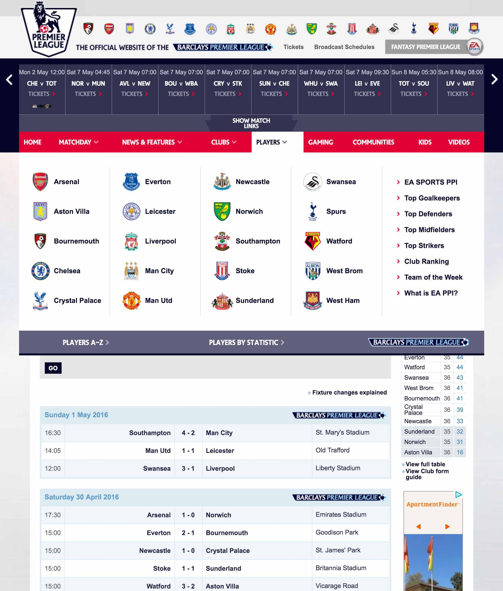

Official website for the English Premier League
Teams and their stadiums

Sameer Bajaj, Safei Gu, Keshav Potluri | Info Viz Final Project
.
The English Premier League is one of the world’s most popular professional soccer leagues, broadcasted in 212 territories to a potential TV audience of 4.7 billion people. It involves 20 teams from England, each playing a total of 38 matches every season, hence totaling 380 matches per season, making it a very rich source of data. The data set is available publicly here.
As huge fans of the beautiful game of soccer and the English Premier league, we are motivated to share our enthusiasm with others. The project hence aims at utilizing data to create rich visualizations to help understand soccer and the English Premier League better. We aim to create visualizations that would allow people to easily understand various data metrics and performance indicators in an interactive manner. With easy to understand and interactive visualizations, we aim to provide better insights about soccer and the league, like how do teams perform throughout seasons, how is it performing relative to other teams, etc.
English premier league has been the home to some of the world's top football clubs like Manchester United, Arsenal, Chelsea etc. These clubs attract world's some of the most talented players making every game a visual treat for the viewers. Most of the world's best players like Christiano Ronaldo, Theiry Henry, Robin Van Persie etc. started their careers in the Premier League.
“If uncertainty makes for compelling competition, nothing can rival the English Premier League.” - New York Times.
As a result of the world-class talent, many of the Premier League games feature unpredictable outcomes. Unlike other leagues in the world, it’s very difficult to predict the results of the matches, making it the most interesting league in the world. For example, in 2015-2016 season, Leicester City, a bottom seed club with the odds of 1:5000 of winning the league, achieved the impossible and won the league.
Among the twenty teams, the top four teams qualify for the UEFA Champions League, which is the most prestigious club soccer tournament in the world, featuring the best teams from Europe competing against each other. With one-fifth of the teams in the tournament from the premier league, clubs from England also outperform teams from the rest of the Europe, making it one of the most respected leagues in Europe.
Soccer is played between two teams of 11 players. Each team has to put the ball in the opposite team's net, while preventing the other team from putting the ball in their net. Different players have different positions on the field and each of these players has a unique responsibility in the game. A Goalkeeper stays close to the team's net and stops the ball from entering the net. A Defender prevents the opposite team from getting too close to their net and helps the goalkeeper in doing his job. A Forward or Striker plays up front towards the opposite team's net, with the only responsibilty of putting the ball in the opposite team's net. A Midfielder is the most versatile player on the field. When the ball is towards the opposite team's goal, a midfielder helps the forwards in scoring. But if the ball is toward's their own goal, they help the defenders and the goalkeeper in stopping the opposite team from scoring. In order to perform well, a team requires all its players in very specific positions in the field and this is prescribed by Formations
A Formation describes how the players in a soccer team are positioned on the field. Different formations are used by teams based on the skill of the opposite team, the match situation and also the skills of the players in their own team. If a team wants to play defensive soccer, the 4-4-2 formation, with 4 defenders, 4 midfielders and two forwards, can be used. On the other hand, 3-4-3 is an offensive formation with little defensive play and more focus on attack. There is no optimal formation that a team can use for every match.
Team formations can change any time during the game. Click on one of the formations below to view the field movement.
All 20 teams in the Premier League, play every other team twice every season, playing a total of 38 matches. Every team plays one match every week. A win earns a team 3 points, a draw earns both the teams 1 point and a loss does not earn any point. At the end of 38 weeks, the team with the maximum number of points wins the League. Different teams perform differently in the league. The better teams perform consistently throughout the year, while some teams perform extremely well for one half of the year, but manage to loose in the other half. Also, due to the highly unpredictable nature of the league, any team can win or lose at any time. Therefore, looking at how teams perform throughout the year, can provide some interesting insights about the league.
Select the season from the dropdown to view the team performances for that season. Hover on a team to view its performance in the season. The horizontal axis represents the 38 weeks in the tournament. The vertical axis represents the maximum and the minimum points scored by any team in that week. Each line represents a team, showcasing its performance throughout the year.
Over the years, teams have developed rivalries amongst themselves, establishing patterns within the league. For example, Stoke City no matter how badly it performs throughout the season, defeats all the top clubs in home matches. Manchester United almost always defeats its rivals, Liverpool. Such interesting insights can be developed if one views the relative performaces of teams with respect to each other.
Select the season from the drop down. Double click on a team to view its relative performance w.r.t other teams during that season. Click and drag any of the teams to view the data clearly, if not visible. Hover on lines/circles for more info.
Players maketh the team!!! Soccer is a team sport. And like any other team sport, a team can perform well for a variety of reasons. A team can perform exceptionally well across seasons because they have better players. Or a team can perform well exceptionally well because they have one exceptionally good player. Or a team can perform well because they have a team of average players who perform well together. Sometimes a team can have ups and downs because of player injuries or sudden good performance of certain players. All these can be examined if we examine data related to player performance in detail.
Select player from the list to view the player details. To view team specific player data, click on the teams to filter the players for that specific team.

At the end of 38 weeks, the total points obtained by the team decide its fate for the next season. The team with the highest points wins the league and is crowned as the Champion. The top 3 teams including the champion, get a chance to compete with Europe's best clubs in the UEFA Champions league next season. The team in the 4th position, gets a chance to compete against other teams in Europe to secure a berth in the UEFA Champion's League. The bottom 3 teams are relegated from the Premier League and do not get to play again in the Premier League next season. Instead 3 new clubs from lower leagues get a chance to play in the Premier League. All the other teams in the Premier League are considered safe and get the chance to compete again next season. Analyzing this data can lead to some interesting insigths acout the different clubs in the Premier League.
Scroll and Filter through data to identify some interesting trends in the Premier League.